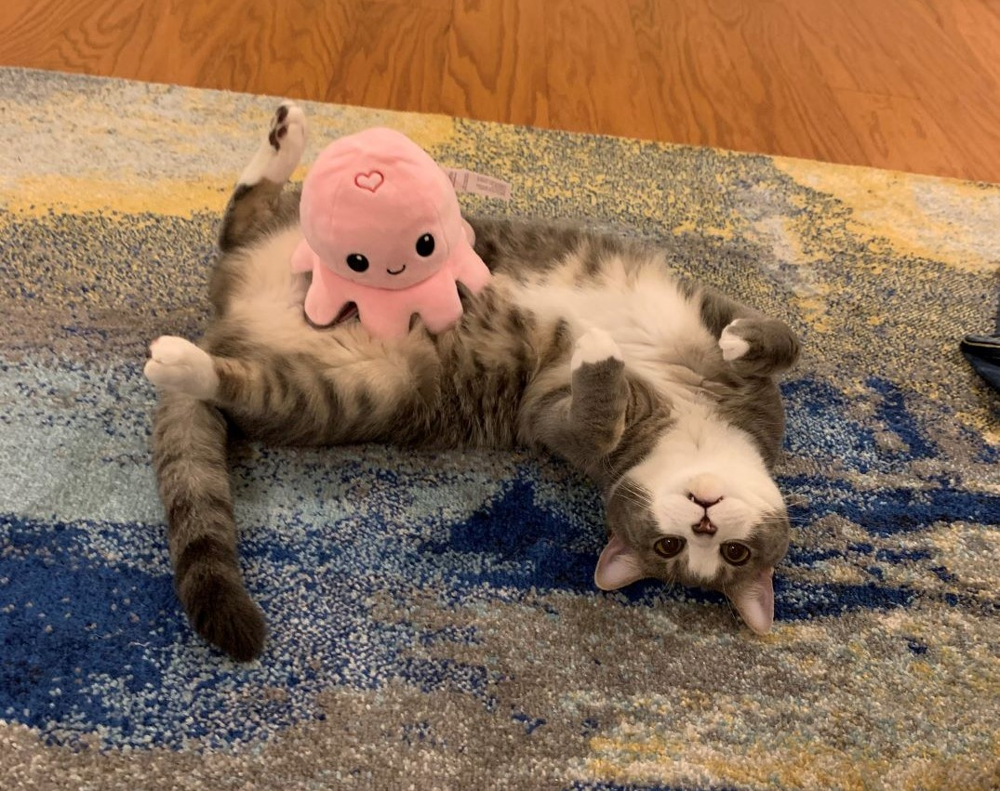
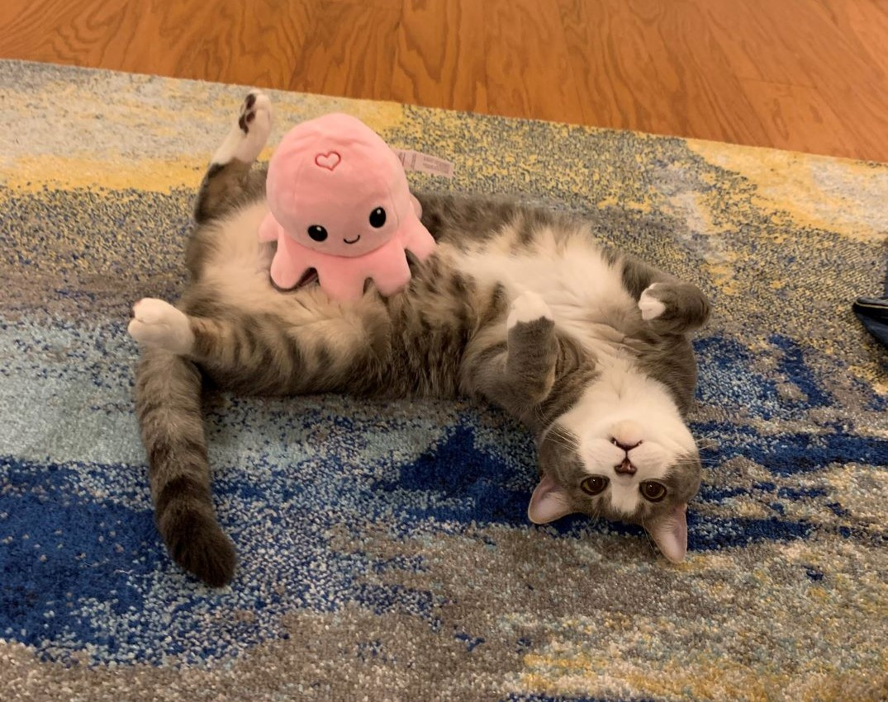

Hello! So happy to meet you here. I am from Chengdu, China, the hometown of pandas 🐼. I love my city, because it is a place of inclusion, relaxation, but also ambition.
Education
Currently, I am a fourth-year PhD student at NC State University specializing in environmental engineering. I work under the advisement of Dr. Douglas Call. Before I came to the U.S., I went to college in Jiangnan University in Jiangsu, China. Back then, I always imagined I’d work in art/design related industry (haha to that). I never would have thought that one day I would study abroad or go to grad school. But one day, the impulsive decision hit me, and stayed with me. In 2015, I met Dr. Jacqueline McLaughlin, a professor from Penn State who came to Jiangnan University to teach our ecology class. Her teaching style and enthusiasm for the environment lit the first sparkle for my vision of being a researcher. Afterwards, I joined two labs to get exposure to research, and I fell in love with it. In 2017, upon graduating college, I moved to the U.S. for my Master’s at the University of Arizona. Then in 2019, I moved to Raleigh, North Carolina for my PhD.
The Fun Things
I learnt art throughout my childhood (which I stopped to prepare for the college entrance exam), so I have some artsy-ish hobbies. I love photography, especially film and portraits. Sadly I don’t have too many models for portrait shooting. So I do photography for my friends, and offer free graduation photography for whoever need :D Yet word isn't out yet… So I do not have clients :\
Besides that, I “design” stuff like symposium booklets. You can find my two booklet designs here:
2020 Environmental, Water Resources and Coastal Engineering Symposium Booklet
2022 Environmental, Water Resources and Coastal Engineering Symposium Booklet
I am also very proud of my conference poster designs. So please catch me at conferences! Oh btw, I am a big fan of geese! I have a Neon art piece at home which features a honking goose. I loved playing the Untitled Goose Game (https://goose.game/) because I got to be a mean goose that messed up human’s properties. I don’t do that in real life.
My Cats
I have two kitties that I and my husband adopted in 2017 after we moved to Raleigh. Daisy the sweet bud and Marble the mean cat. I am a crazy cat person. I almost want to adopt every single cat that comes to my sight. It is dangerous.
 
